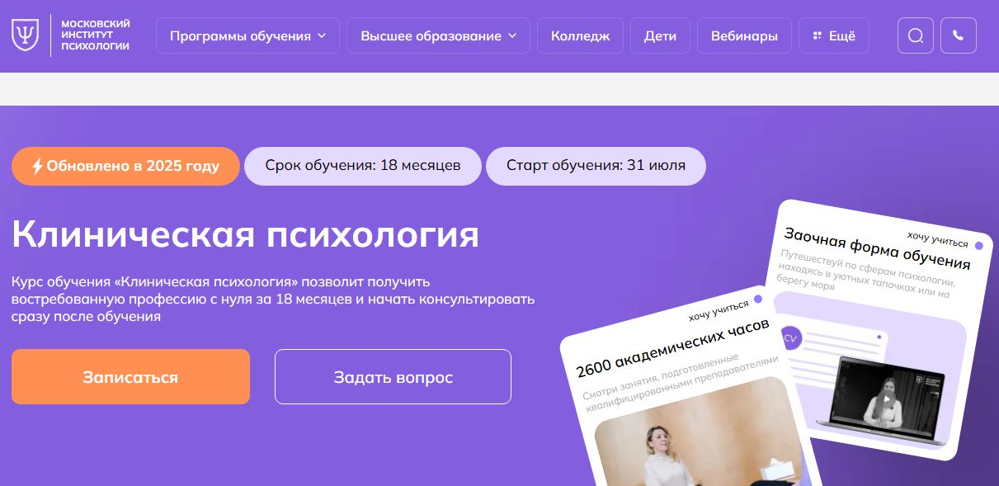
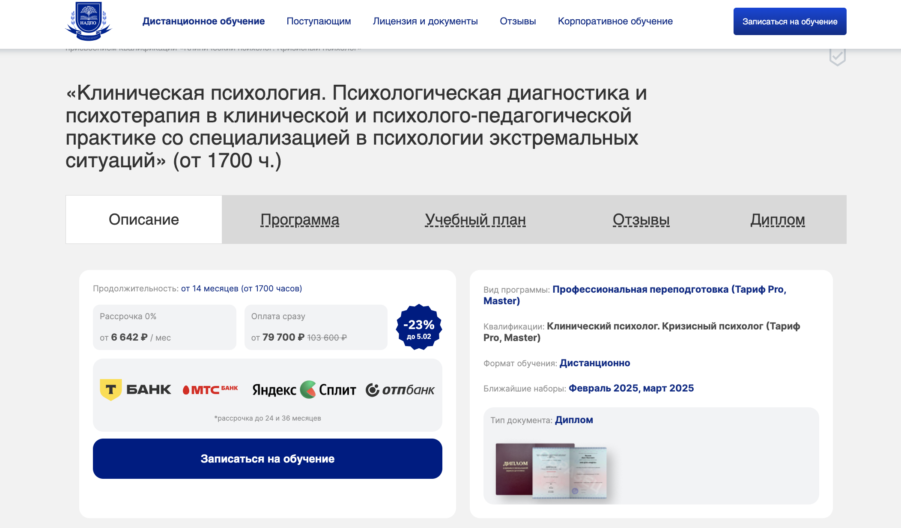
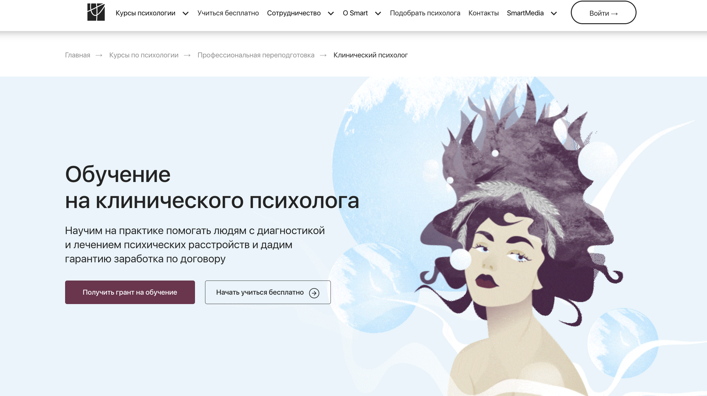
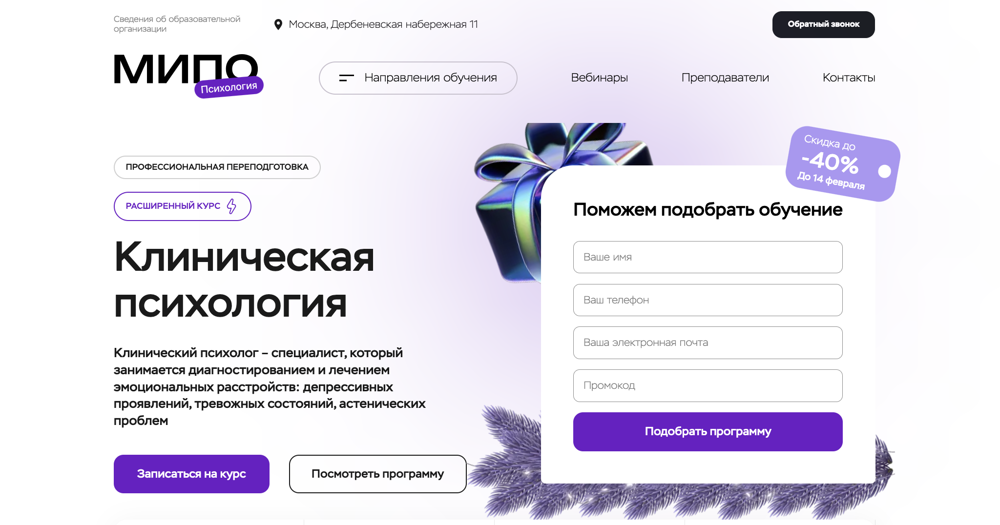
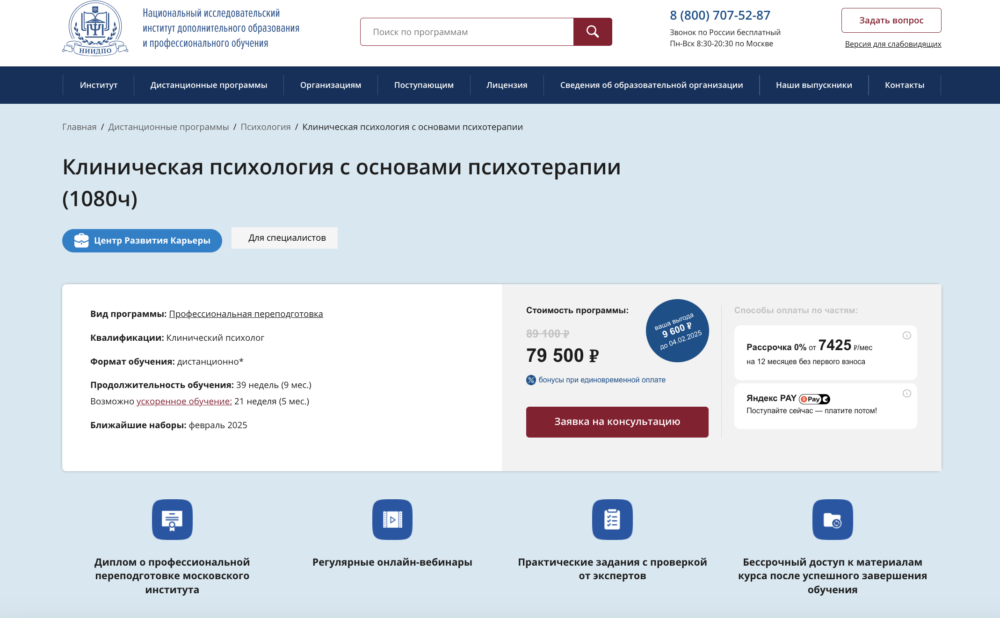
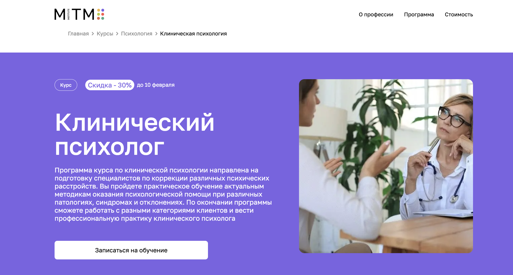
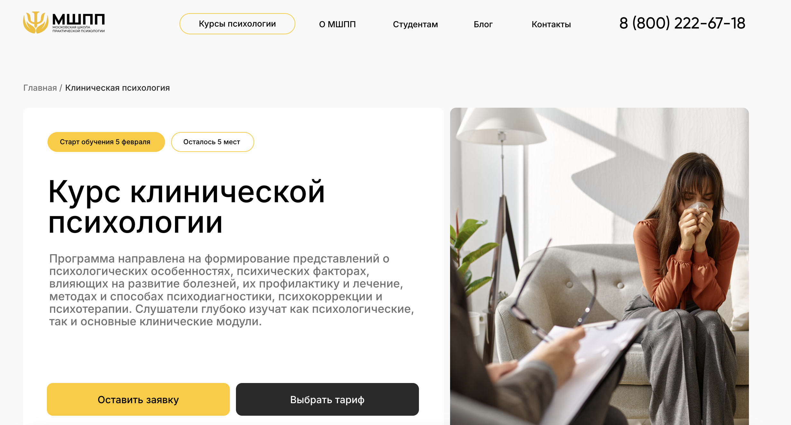
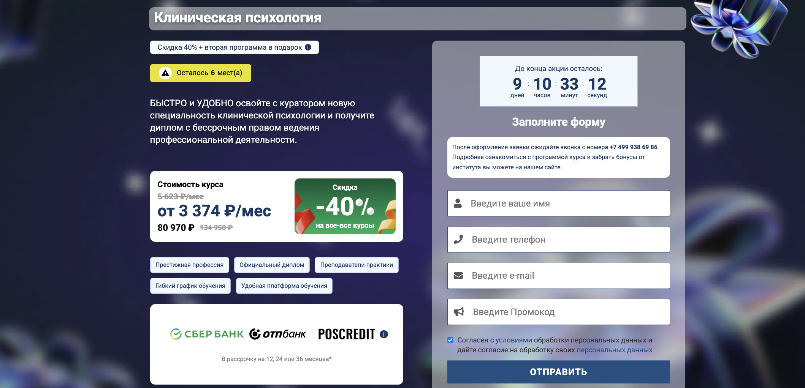
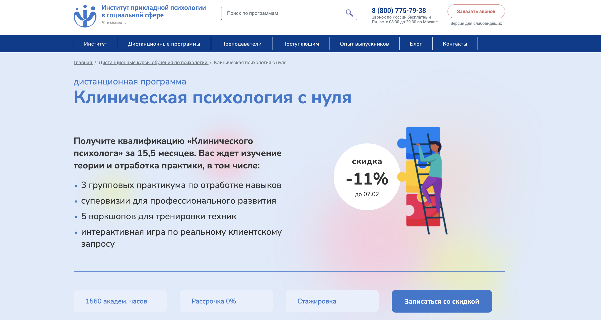
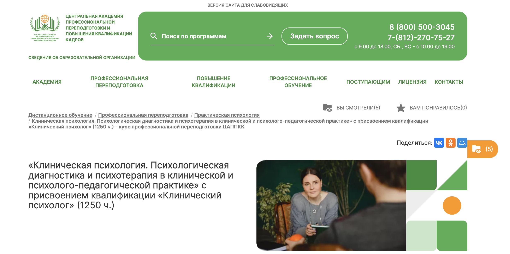

Клинический психолог — специалист, который проводит диагностику психического состояния, помогает в лечении психических расстройств и консультирует пациентов. Чтобы получить эту профессию, требуется профессиональная переподготовка. Дистанционный формат обучения дает возможность освоить клиническую психологию без отрыва от работы, а программы переподготовки включают теоретические знания и практические навыки. Мы собрали рейтинг ТОП-10 курсов профессиональной переподготовки на клинического психолога в 2026 году. В обзоре представлены программы, доступные дистанционно, с дипломом государственного образца и актуальными методами психологической диагностики и психотерапии.
Топ онлайн-курсов проф. переподготовки по клинической психологии
- Клиническая психология — Московский Институт Психологии (по промокоду onlinekursy скидка 🎁 10%)
- Клиническая психология — НАДПО
- Клинический психолог – Институт Smart
- Клиническая психология – МИПО (по промокоду onlinekursy действует скидка 🎁 10%)
- Клиническая психология с основами психотерапии – НИИДПО
- Клинический психолог — MITM
- Клиническая психология – МШПП
- Клиническая психология – ИПО
- Клиническая психология с нуля — ИППСС
- Клиническая психология – ЦАППКК
Рассмотрим курсы профессиональной переподготовки на клинического психолога подробнее.
Клиническая психология – Московский институт психологии

✅ Официальный сайт: mip.institute
Особенности курса:
Программа предлагает обучение в дистанционном формате, что позволяет получать знания без необходимости посещения занятий в рамках учебного заведения. Обучение включает 38 тематических модулей, охватывающих ключевые аспекты клинической психологии и методы психологической диагностики. Студенты получают диплом государственного образца по окончании обучения, который признается на международном уровне.
Преимущества:
- Высокая востребованность специалистов в области психологии на российском рынке труда
- Возможность работать в удобном удаленном графике
- Поддержка и консультации от опытных преподавателей с практическим опытом
- Разнообразие методов психологической коррекции и диагностики
- Средняя заработная плата профессионалов составляет от 60 000 до 120 000 рублей в месяц
Клиническая психология. Психологическая диагностика и психотерапия — Национальная академия дополнительного профессионального образования

✅ Официальный сайт: nadpo.ru
Особенности курса:
Программа профессиональной переподготовки охватывает актуальные аспекты клинической психологии и включает дистанционное обучение, что позволяет студентам учиться в своем темпе. Академия предлагает доступ к уникальным материалам и практическим занятиям, которые обеспечивают необходимый уровень подготовки. Участники освоят ключевые методы диагностики и психологической помощи, что повысит их конкурентоспособность на рынке труда.
Преимущества:
- Курс включает 1700 часов обучения, в том числе практические занятия с опытными преподавателями.
- Гибкий график позволяет совмещать обучение с работой.
- Выпускники получают диплом, соответствующий государственным требованиям.
- Постоянная поддержка кураторов и доступ к образовательным ресурсам в формате 24/7.
- Доступ к библиотекам и онлайн-консультациям на протяжении всего курса.
Клинический психолог — Онлайн Институт Смарт

✅ Официальный сайт: smart-inc.ru
Особенности курса:
Программа профессиональной переподготовки направлена на глубокое усвоение знаний в области клинической психологии с акцентом на практические навыки. Студенты имеют возможность проходить обучение в дистанционном формате, что позволяет совмещать учебу с работой. Курс включает 650 часов, охватывающих различные аспекты диагностики и коррекции психических расстройств.
Преимущества:
- Обучение ведется опытными преподавателями с высоким уровнем квалификации.
- По окончании курса выдается диплом о профессиональной переподготовке, признанный на государственном уровне.
- Студенты получают доступ к закрытым материалам и группам для практической работы.
- Поддержка кураторов и тьюторов на протяжении всего обучения.
- Возможность получения гранта на обучение и рассрочки платежа.
Клиническая психология — Московский Институт Профессионального Образования

✅ Официальный сайт: mipo.msk.ru
Особенности курса:
Программа курса направлена на подготовку клинических психологов с акцентом на психодиагностику и методы психологической коррекции. Обучение проходит в дистанционном формате, что обеспечивает гибкость и комфорт для студентов. В процессе учебы применяются современные технологии, включая онлайн-вебинары и доступ к учебным материалам через платформу дистанционного обучения.
Преимущества:
- Высокий уровень востребованности специалистов в области психологии
- Диплом о профессиональной переподготовке с международной аккредитацией
- Поддержка менторов и преподавателей на протяжении всего обучения
- Гибкий график и возможность совмещения с работой
- Разнообразие учебных материалов и практических занятий
Клиническая психология с основами психотерапии — НИИДПО

✅ Официальный сайт: niidpo.ru
Особенности курса:
Программа предлагает обновленный подход к изучению клинической психологии через дистанционной формат, что позволяет получить знания в удобное время и место. Участники курса смогут освоить базовые и расширенные методы психотерапии, а также пройти профессиональную переподготовку с получением диплома государственного образца. Особое внимание уделяется практическим занятиям и онлайн-вебинарам с экспертами, что помогает развивать ключевые навыки работы с клиентами.
Преимущества:
- Гибкий график обучения и возможность дистанционного получения знаний.
- Доступ к современным образовательным ресурсам и материалам курса.
- Бессрочный доступ к лекциям и дополнительным вебинарам после окончания программы.
- Поддержка опытных практиков в ходе всего обучения.
- Возможность участия в супервизиях и рабочих группах для улучшения практических навыков.
Клиническая психология — Московский институт технологий и управления

✅ Официальный сайт: mitm.institute
Особенности курса:
Программа обучения в области клинической психологии включает теорию и практику, что позволяет студентам осваивать профессиональные навыки психологической диагностики и коррекции психических расстройств. Курс имеет дистанционный формат, что обеспечивает гибкость и возможность изучения материалов из любой точки мира. Выпускники программы получают диплом государственного образца, что открывает двери к различным профессиональным возможностям.
Преимущества:
- Получение квалификации клинического психолога за 1 год обучения
- Практические занятия под руководством опытных преподавателей и супервизоров
- Актуальные методики и подходы в области психотерапии
- Доступ к комьюнити и поддержке на протяжении всего учебного процесса
- Ссылка на налоговый вычет в размере 13% от стоимости обучения
Клиническая психология — Международная школа практической психологии

✅ Официальный сайт: mspp.online
Особенности курса:
Курс по клинической психологии предлагает углубленное изучение профессиональных навыков, методов диагностики и психотерапии. Студенты смогут познакомиться с основами клинической теории и практики, что позволит им уверенно работать с различными психическими расстройствами. Обучение проходит в компактных группах для более индивидуального подхода к каждому слушателю.
Преимущества:
- Дистанционный формат обучения обеспечивает гибкость и доступность для студентов из разных регионов.
- Программа включает интенсивную практику, что позволяет сразу применять полученные знания.
- После завершения курса выдается диплом, аккредитованный в международных органах.
- Поддержка карьерного центра помогает в трудоустройстве и профессиональном развитии.
- Обширная сеть выпускников и контакты с практикующими психологами.
Клиническая психология — Институт профессионального образования

✅ Официальный сайт: ipo.msk.ru
Особенности курса:
Программа профессиональной переподготовки по клинической психологии включает удобный дистанционный формат обучения с поддержкой куратора, который поможет освоить программу с комфортом. Студенты изучат методы диагностики и лечения психологических расстройств, а также получат доступ к современным исследованиям в этой области. Также предусмотрены дополнительные курсы повышения квалификации, что расширяет возможности для карьерного роста.
Преимущества:
- Гибкий график обучения, который позволяет совмещать учебу с работой
- Доступ к образовательной платформе с современными учебными материалами
- Получение диплома, подтверждающего квалификацию клинического психолога
- Практические занятия под руководством опытных преподавателей-практиков
- Возможность рассрочки оплаты за обучение
Клиническая психология с нуля — Институт прикладной психологии в социальной сфере

✅ Официальный сайт: ippss.ru
Особенности курса:
Программа обучения обеспечивает качественную профессиональную переподготовку в области клинической психологии с акцентом на практическое применение знаний. Студенты обладают возможностью пройти стажировку и получить ценный опыт консультирования под руководством опытных наставников. Обучение охватывает ключевые методы психологической диагностики и современные терапевтические техники, что позволяет выпускникам успешно работать с различными клиническими запросами.
Преимущества:
- Дистанционное формат обучения, подходящее для любого графика
- Качественная программа с акцентом на практические навыки
- Скидка на обучение при записи до указанного срока
- Возможность получения сертификатов за участием в вебинарах
- Содействие в трудоустройстве и стажировках после окончания курса
Клиническая психология — Центральная академия профессиональной переподготовки и повышения квалификации кадров

✅ Официальный сайт: appkk.ru
Особенности курса:
Обучение предоставляет уникальную возможность освоить профессию клинического психолога через дистанционное образование. Программа включает разработанные опытными методистами учебные материалы и современные методы диагностики. Доступ к курсу и библиотеке вебинаров осуществляется 24/7, что позволяет учиться в удобное время и в любом месте.
Преимущества:
- Получение диплома установленного образца по окончании обучения
- Возможность рассрочки на оплату обучения до 12 месяцев
- Поддержка квалифицированных преподавателей на протяжении всего курса
- Доступ к дополнительным образовательным материалам и вебинаром
- Совмещение учебного процесса с работой и другими обязательствами
Что такое переподготовка на клинического психолога?
Переподготовка на клинического психолога – это процесс профессиональной подготовки, который позволяет специалистам в области психологии получить квалификацию клинического психолога. Обучение включает изучение методов диагностики психических расстройств, психологического консультирования, а также психологической коррекции и реабилитации клиентов.
Кто может пройти переподготовку на клинического психолога?
Переподготовку могут пройти лица с высшим психологическим или медицинским образованием, а также специалисты с дипломами в других областях, желающие сменить карьеру или расширить свои профессиональные навыки. Студенты, имеющие дипломы любых высших учебных заведений, также могут получить доступ к этой программе.
Каковы основные этапы обучения на клинического психолога?
Основные этапы обучения включают:
- Изучение теоретических основ клинической психологии.
- Прохождение практических занятий и стажировок.
- Изучение методов психологической диагностики и терапевтических подходов.
- Подготовка и сдача итоговых аттестаций.
Какие методы психотерапии изучаются на курсах переподготовки по клинической психологии?
На курсах переподготовки изучаются различные методы психотерапии, включая когнитивно-поведенческую терапию, психодинамическую терапию, гуманистическую терапию и другие современные подходы, позволяющие эффективно работать с клиентами в различных клинических запросах.
Какие форматы обучения доступны для переподготовки на клинического психолога?
Существует несколько форматов обучения, включая очное, заочное и дистанционное обучение. Дистанционный формат особенно удобен для тех, кто работает или учится, так как позволяет гибко планировать время и получать знания в удобной обстановке.
Каковы преимущества дистанционного обучения для клинических психологов?
Дистанционное обучение предоставляет множество преимуществ, таких как:
- Гибкость расписания.
- Возможность обучения из любой точки мира.
- Доступ к разнообразным учебным материалам и онлайн-лекциям.
- Снижение затрат на поездки и проживание.
Какая стоимость обучения на клинического психолога?
Стоимость обучения на клинического психолога варьируется в зависимости от вуза и формата обучения. В среднем, стоимость курсов переподготовки колеблется от 70 000 до 150 000 рублей. Также стоит учитывать дополнительные расходы на учебные материалы и стажировки.
Каковы сроки завершения программы переподготовки на клинического психолога?
Сроки завершения программы могут различаться в зависимости от формата обучения. Обычно они составляют от 6 месяцев до 2 лет, в зависимости от интенсивности курса и количества практических занятий.
Какую квалификацию получают выпускники программы переподготовки?
Выпускники получают диплом государственного образца, подтверждающий их квалификацию клинического психолога. Это позволяет им работать в медицинских учреждениях, образовательных центрах и частной практике.
Какие предметы изучают студенты на курсах переподготовки?
Студенты изучают множество дисциплин, включая:
- Основы клинической психологии.
- Психологическую диагностику психических расстройств.
- Методы психотерапии и психологического консультирования.
- Психологическую коррекцию и реабилитацию.
Как проводится психологическая диагностика в рамках обучения?
Психологическая диагностика проводит диагностику психического состояния пациентов с использованием современных методов. Студенты имеют возможность работать с реальными клиентами под наблюдением опытных преподавателей, что позволяет укрепить их практические навыки.
Где можно пройти курсы переподготовки на клинического психолога?
Курсы переподготовки на клинического психолога предлагают различные учебные заведения, включая медицинские вузы, специализированные образовательные учреждения и центры психологии. Выбор учебного заведения зависит от личных предпочтений и доступности программы.
Какими компетенциями должен обладать клинический психолог?
Клинический психолог должен обладать следующими компетенциями:
- Навыками диагностики и оценки психического состояния.
- Знаниями различных методов психотерапии.
- Умением работать с клиентами разных возрастов.
- Навыками психологической коррекции и реабилитации.
Каковы перспективы трудоустройства клинического психолога?
С профессиональной переподготовкой на клинического психолога открываются широкие возможности трудоустройства. Специалисты могут работать в медицинских учреждениях, образовательных организациях, а также вести частную практику, что делает эту профессию востребованной.
------------------------------------------------
Реклама. Информация о рекламодателе по ссылкам в статье.